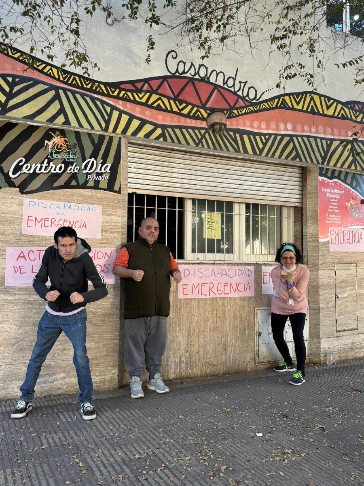
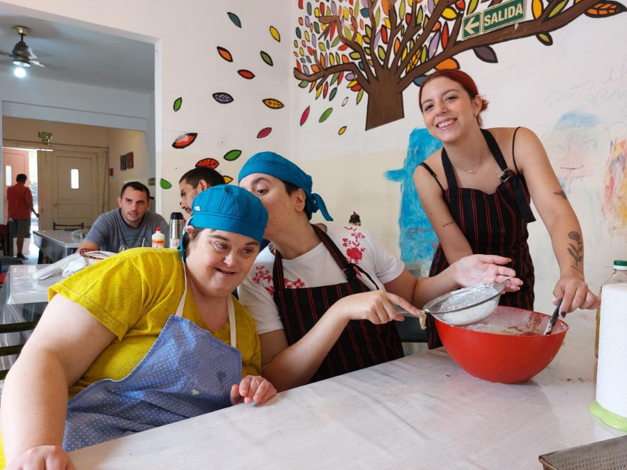
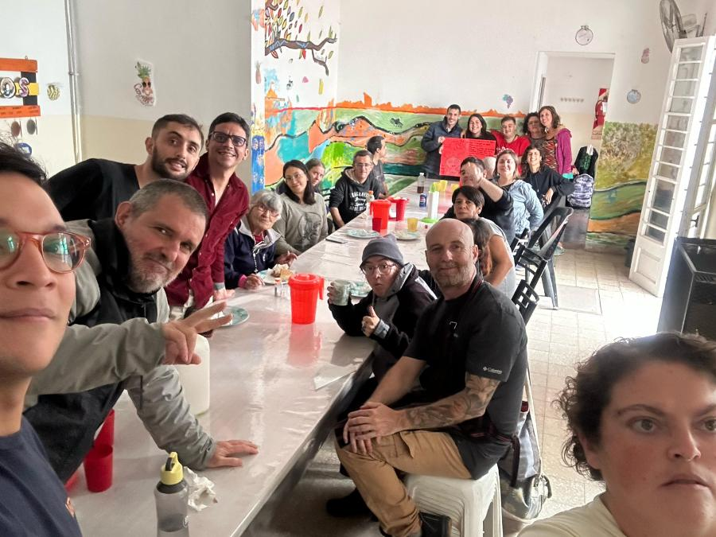
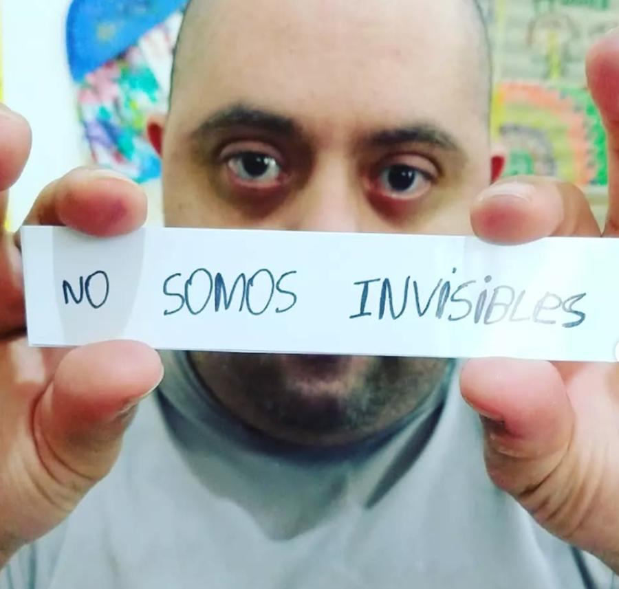
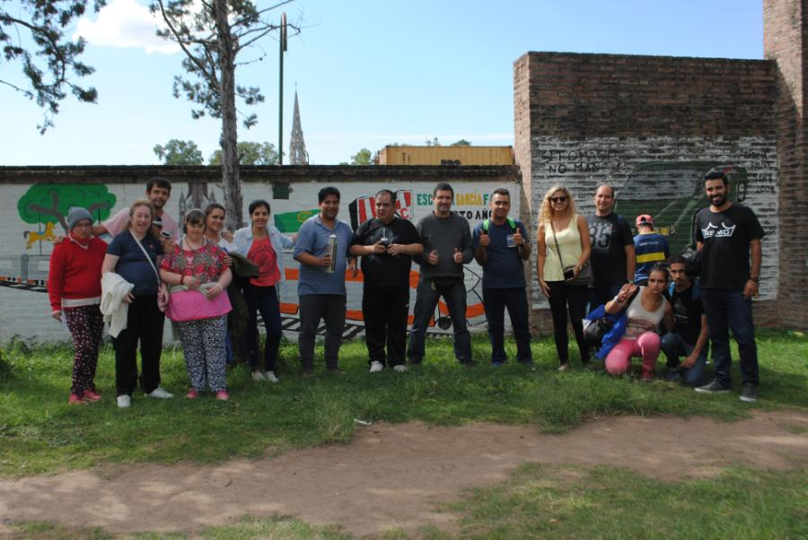

Casandra es una Asociación Civil sin fines de lucro de la Ciudad de Córdoba, que se constituye en el año 2003 con el objetivo de brindar asistencia, capacitación e investigación en problemáticas graves en salud mental, particularmente en lo que concierne a la “locura” y su relación con la discapacidad.

Este proyecto surge a partir de la experiencia e inquietudes de los profesionales que trabajan en Casandra, desarrolladas en el campo de la locura, de la denominada salud mental y la discapacidad.

La propuesta de Casandra se basa en una política de acción horizontal y participativa, que pone como eje de la organización el trabajo colectivo, la circulación de la escucha y la palabra para la toma de decisiones, la evaluación constante de nuestro trabajo y una circulación del conocimiento y la información.

Se intenta generar acciones que reviertan la situación en la que se encuentran las personas con las que trabajamos, situación de exclusión, donde su palabra no es valorada ni escuchada, donde su estar en el grupo familiar y el seno social que lo aloja, muchas veces es objetivado, excluido de posibilidades de subjetivación.

Consideramos que estas problemáticas requieren un abordaje desde el ámbito de la salud con proyección hacia lo comunitario, apuntando a la inclusión de las personas que atraviesan estas dificultades. Implica la intervención en otras áreas tales como la promoción social y la defensa de los derechos de los sujetos y familiares, como ante las situaciones de exclusión y las problemáticas laborales. Las particularidades en el lazo relacional de estas personas, constituyen nuestro campo de ejercicio a fin de evitar discriminaciones o exclusiones en los ámbitos laboral y educativo, o amortiguar los efectos que las mismas tienen para esas personas
El trabajo de Casandra apunta a crear dispositivos que permitan el abordaje integral de las problemáticas psicosociales, ofreciendo espacios que propicien la integración social y familiar. Para ello hemos creado el Centro de Atención Psicosocial Casandra, habilitado por el Ministerio de Salud de la Provincia de Córdoba desde el año 2005 a la actualidad.